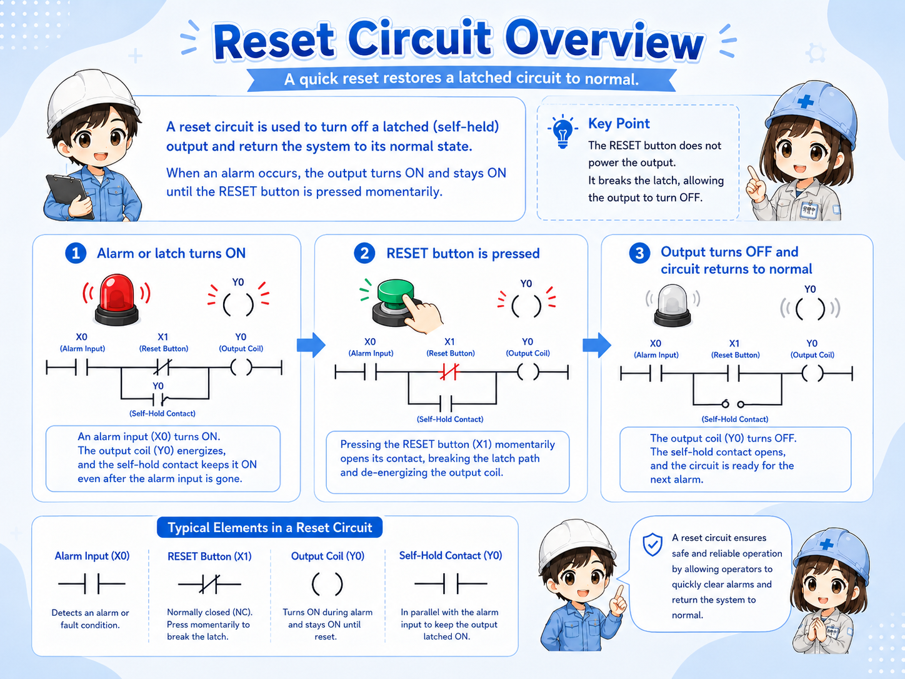
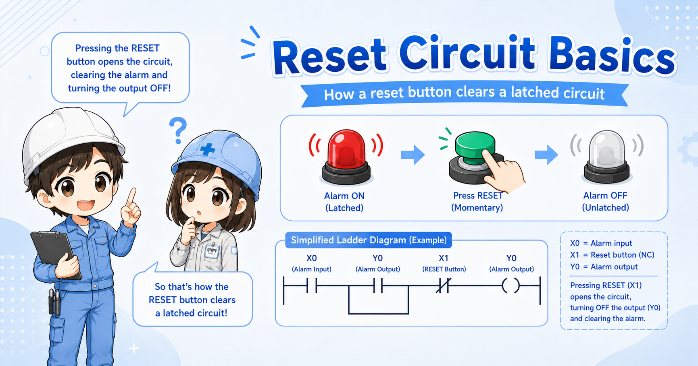
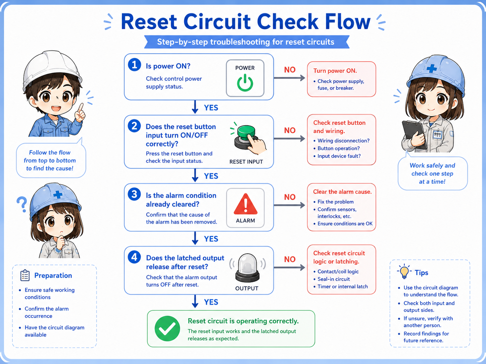

Good fit for
- Beginners learning reset logic in PLC and relay circuits.
- People who want to understand how a held output is released.
- Technicians checking why reset does not work in the field.
A reset circuit clears a held state and returns the control logic to a normal condition. This guide explains reset buttons, hold release logic, alarm recovery, and field checks.
A reset circuit clears a held state and returns the circuit to its normal condition.
A reset circuit is used when a circuit must release a state that has been held ON. In PLC control, this often means clearing an internal relay, an alarm hold bit, a latch, or a self-hold condition.
Reset is not just “turning something OFF.” In real equipment, reset timing matters. If the original problem still exists, clearing the held state too early may hide the fault or make troubleshooting harder.

Hold logic remembers a state. Reset logic decides when that memory can be cleared safely and intentionally.
Separate the held state, reset input, permissive condition, and output recovery.
| Part | Role | Field image |
|---|---|---|
| Held state | The internal bit, coil, or output condition that remains ON. | Self-hold output, alarm hold bit, latch relay. |
| Reset input | The button, signal, or command used to clear the held state. | Reset pushbutton, HMI reset, panel reset switch. |
| Reset permissive | The condition that allows reset to work only when appropriate. | Fault removed, stop condition active, machine ready. |
| Restored state | The normal condition after the hold has been released. | Alarm lamp OFF, buzzer stopped, operation command cleared. |
Reset for an operation hold, reset for an alarm hold, and reset for a safety-related circuit are not the same. Always follow the actual machine specification and official manuals.
For beginners, focus on what is being held and what condition clears it.
A reset circuit is often paired with a hold circuit. The hold condition keeps an internal bit ON, and the reset condition clears it. In ladder logic, this may be written as a reset instruction, a seal-in circuit with a reset contact, or a separate rung depending on the PLC and programming style.

A self-hold or alarm hold bit remains ON.
An operator presses reset or a reset command turns ON.
The circuit confirms that reset is allowed.
The held bit turns OFF and the output returns to normal.
In many circuits, reset should work only after the cause has been removed. If reset clears the state while the original condition remains, the circuit may immediately set again or hide an important fault.
Alarm reset should clear the held alarm, not hide the real problem.
In alarm circuits, reset is often used after the operator has checked the cause of the alarm. If the alarm input is still active, the alarm hold may stay ON or turn ON again immediately after reset.
Some systems separate acknowledge, buzzer silence, and alarm reset. This is useful because silencing a buzzer and clearing an alarm record are different actions.
The operator confirms that the alarm has been noticed. The alarm may remain visible.
The sound may stop while the alarm lamp or message remains active.
The held alarm state is cleared when reset is allowed.
The original abnormal condition has been removed or returned to normal.
In field troubleshooting, do not only ask “Did reset turn ON?” Also check whether the original fault condition has really turned OFF.
Most reset problems come from checking the button but not checking the conditions around it.
| Symptom | Likely point to check | Basic idea |
|---|---|---|
| Reset does not work | Reset button, input monitor, reset permissive, held bit | Check whether the reset signal reaches the PLC and whether reset is allowed. |
| Alarm resets but comes back | Original alarm input, fault condition, sensor state | The original abnormal condition may still be active. |
| Output turns OFF unexpectedly | Reset contact, rung order, shared reset signal | Check whether another reset condition is clearing the held state. |
| Only buzzer stops | Acknowledge logic, silence logic, alarm hold logic | This may be intentional if buzzer silence and alarm reset are separated. |
Trace the reset path from the physical button to the held bit.


When reset does not work, do not stop at the reset button. Check whether the PLC sees the input and whether the circuit allows reset at that moment.

So I should trace the reset input, the original fault condition, the permissive logic, and the held bit instead of checking only the button.
A reset circuit clears a held state, but only the right condition should clear it.
The bit, output, or alarm condition that remains ON.
The button or command used to request reset.
The condition that confirms reset is allowed.
The normal state after the hold has been cleared.
If you can separate these four parts, you can read most basic reset circuits. For real machines, always confirm the PLC program, device wiring, reset rules, and official manuals before changing the circuit.